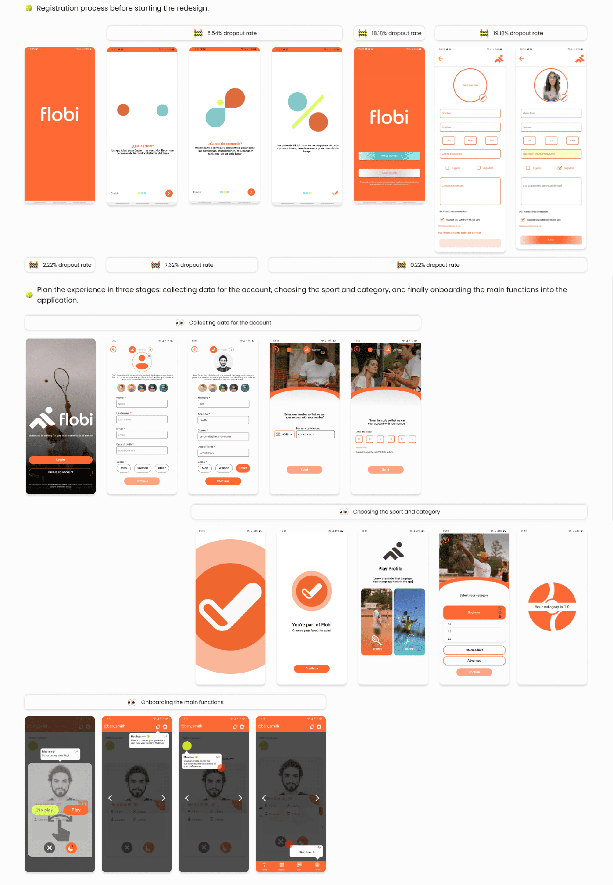
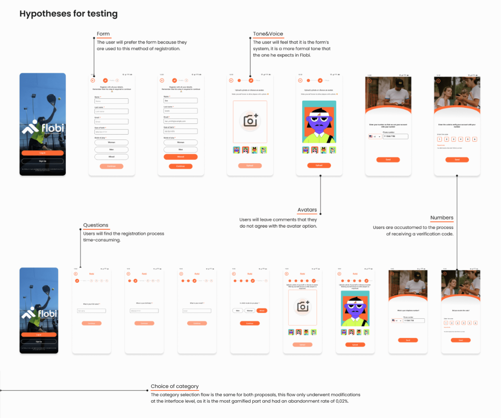

Why did we start this project?
This project was initiated due to several issues identified in the application registration process.
28%
Between December 12th, 2022, and Juanary 12th, 2023.
Of new users who attempted to register abandoned the process durin the registration form.
45%
From July 2022 to January 2023.
Of users abandoned the registration process, only 55% of users who started the registration process made it to the first open.
30%
Between September 2022 and January 2023.
Of new users registered had completed their profiles. This is a crucial aspect of the application as it enables the creation of player matches.
Project Timeline
Three months. January to April 2023
Team members
UX | UI Designer My Rol
UI Designer
UX Writing
Illustrator
Problem statement & Challenges
- Impact the company’s KPI in improving Flobi’s record conversation rate.
- Improve the experience during the registration process, create a gamified experience.
- Identify the personal information required for registration.
- Implement onboarding to guide the user once the registration is completed.
- Identify business and development constraints.
- One challenge we faced was the change of team members.
First iteration
- My rol in the first iteration was as a UX designer.
- Deliver findings to the UI designer for proposal generation.
- For this fist release, we had the following product/tech limitations: Logging in via Google, Apple or social networking services is not contemplated .
- A bottleneck was identified in the profile picture, as it is a requiered field, and several users drop out at this point.
- As a brand, Flobi seeks to provide a gamified experience to its users from the moment the register.

Second iteration
- My rol in the first iteration was as a UX &UI designer.
- We have considered that presenting a form as a way of registration we had a 19,18% abandonment rate and one of our goals is to offer a more dynamic process to the user, that is way we explored other options, we conducted research of the competition to see how the implement gamification and accompany the user during registration applications such as Padel Mates, PlayAtomic, Tinder, Reva, Duolinguo, among others.
- Together with Celeste Álvarez (UX Writing), we cread a proposal that would accompany the Flobi user during registration, linke a ping-pong of questions.
What do we seek to achieve with this approach?
- Generate a gamified experience from registration.
- Align the app with Flobi’s dynamics that Flobi has in ist social networks users.
Objective of the test
Evaluate the usabilitu and user acceptance in the registration process of Flobi’s new registration flow, both through a form and ping-pong system of questions, through unmoderated testing on the Maze plataform. The objective is to identify areas of improvement and opportunities to optimize the registration flow and improve the user experience.

Third iteration
- In this iteration, we analysed the results of the test that was conduced over a 3-days period by sending emails to participants.
- At this stage of the process, we return to the empathising phase to again a deeper understanding of users’ responses and their appreciation of the proposals presented.
What did users tell us?
- “Interestingly, I found the onde with the separate questions more interactive”
- “I like the step-by-step flow of the typeform”
- “By scrolling through the registration options, it gives the feeling that I won’t get tired or bored filling in the data”
- “It is more convenient to see all fields on one screen”
- “I prefer to see a template with all the lines to fill in together because then at least I know how many fields I will fill in to complete my registration”
- “I find it more common to register as a single sheet of paper. But I don’t dislike the other one”
- “Filling in the data step by step is much simpler and does not give you such an overwhelming prospect of data complete”
Definition and next steps
- Advance and make improvements to the ping-pong type question proposal.
- We decided to move forward with this proposal, as it meets our goals of providing a gamified experience from registration.
- No user has commented on the avatars, so the proposal to allow registration to progress and not to stop users from choosing the image when registrering is maintained.
- Some users said they were anxios about not knowing what the registry would ask them next, so we made changes to the steps.
- Contrary to our initial assumption that the ping-pong question registration process would take users longer, it actually resulted in the shortest average completion time of 28.7 seconds, compared to 73.7 seconds for the form proposal.
Hand-Off
- I delivered to the development team a Figma page with the flow of the use cases, errors and pauses that the user may have during the process, for both sports.
- I worked dynamically with the development team in the creation and implementation of the design system to achieve consistency in the application.
- I provided the development team with the complete flow in Zeplin for the creation of the interfaces.
- In addition, access to the documentation of every project in Notion.
How do we collect data to measure the impact of the proposal?
- Objetive: Evaluate if user experience improvemets positively impact retention and decrease registration abandonment.
- Daily data collection: Track registered users per operating system (Android&iOS) to understand user preferences and proposition adaptability.
- Registration conversion rate: monitor successful registration completion compared to total initiated, indicating proposal effectiveness in converting potential users.
- Time comparison: compare data collected between July 2022 and January 2023 to assess registration abandonment reduction.
- Impact indicators: look for increased daily registered user percentages, especially in low-registration-rate operating systems, and higher registration conversion rates.
- Informing iterations: use collected data to evaluate proposal success and guide further improvements in user experience.
Thank you for making it this far.
I would love to talk about the challenges, decisions and mistakes that were made during this first stage.
Feel free to talk to me on LinkedIn or by mail.
Abrazo Jo